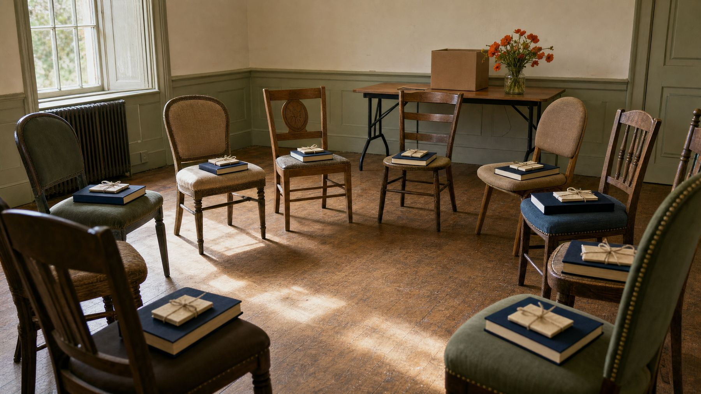

The book is how we start.
Belonging is the point.
We send book clubs to women navigating financial hardship, recovery, domestic violence, illness, and grief — the seasons that isolate. The book gives them something to talk about. The circle gives them somewhere to belong. Here is what a book does for a woman in a hard season, and what we put in her hands.
What a book does
Why we start with a book, and not with a program.
- Recognition
- A woman in a hard season opens a book and recognizes something of herself in its pages—her feelings, her struggles, or the weight she carries. Her circumstances may not change, but the belief that she is alone begins to loosen.
- Finding her voice
- A woman who is often defined by her circumstances enters a conversation where her ideas and opinions take center stage. As she discusses a character, questions a choice, or challenges an ending, she begins to trust—and use—her own voice.
- New possibilities
- Stories invite a woman into places she has never been and lives she has never imagined. When she returns to her own story, its boundaries feel a little less fixed—and new possibilities begin to come into view.
- Hers to keep
- The book goes home with her—to a shelf, a nightstand, or wherever she chooses to keep it. It remains as a reminder that someone selected it with care and believed she deserved a story of her own.
- The circle
- The final page may close, but the connections formed around it remain. Through gathering, listening, and sharing their perspectives, women build relationships that can continue long after the conversation about the book has ended.
What we provide
- Books
- One copy per woman, hers to keep.
- Reading essentials
- Journals, pens, bookmarks, and other thoughtful extras all purchased from women-owned businesses.
- Reflection guide
- A thoughtfully designed Reflection Guide encourages each woman to explore the story more deeply and connect its themes to her own life and experiences.
- Facilitator guide
- Welcome script, discussion questions, journal prompts.
Questions we get asked
- What does it cost?
- Nothing. Not to your organization, and not to the women who receive a kit.
- Do we give the books back?
- No, all materials in the kits are a gift to the women who receive them.
- What if my group is bigger or smaller than ten?
- Tell us. Ten is our standard Book Club Box, not a rule.
- Can the group meet only once?
- Yes. A single gathering is a real book club. Many of our partner settings cannot commit to a series, and that is fine.
- Are you outside Colorado?
- Yes! We ship Book Club Boxes nationwide.
- How long does it take to get a Book Club Box?
- Shipping and delivery times vary widely while we get started. Our goal is to provide two week delivery very soon.
Every box begins a conversation. Help us send the next one.